06 · Top bar, menus, Decisions drawer, desk, dial, client page
The shell
The studio has one top bar on every screen: the desk, a prompt, a run and a document. It sits in app/src/shell/. Its CSS is generated from the approved mock into nui/nui.css (scoped .nui with :where()), with hand additions in nui/shell.css. The desk is nui/Desk.tsx, the dial nui/Dial.tsx, the client page nui/ClientView.tsx and the drawer nui/DecisionsDrawer.tsx.
The top bar, per place
.topbar-outer is sticky, with the desk at 94% (92% in dark) behind blur(12px) and a 1px line under it. .tb-locked is 62px high, max-width 1240px, padding 0 24px, gap 12px. The bar never overflows: the document's name gives way first and truncates (minimum 72px), and everything to its right keeps its size.
Desk
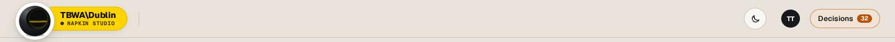
12345- 1Deep O medallion, 64px (a 58px base raised to 64), white card, 1px line. Click: back to the studio
- 2Agency pill: 40px, radius 999px, padding 0 18px 0 30px, tucked under the medallion. Wordmark or name over "● NAPKIN STUDIO" (mono 9px/700)
- 3Theme: a 36px circle with a sun or moon icon
- 4You: 30px initials on --ag-base. Opens the account menu (owner, 11 Nov)
- 5Decisions: 32px pill, 12px/600. The count is mono 10px/700 on --ag-acc, and the whole button goes amber (.has-needs) when calls are open
Document
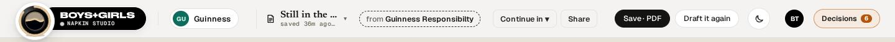
12345- 1Document slot (.tb-app): tool icon, name in the tool's face (Newsreader for Brief, Geist Mono for Research), "saved … · valid" line in mono 10px, ▾ for the document menu
- 2Lineage chip (.tba-line): dashed, 12.5px, "from <parent>". Click opens the Lineage tab
- 3Continue in ▾ and Share (.tba-btn, 30px)
- 4The tool's own bar items (clan:bar): Brief has Save · PDF (primary) and Draft it again; Research has Redo ▾ and Save · PDF ▾
- 5Decisions with the count for this document
The client chip (.tb-client: 34px pill, 26px initials disc, 13px/600) sits between the pill and the document slot whenever a client is in context.
Prompt and working
On a prompt the slot reads "New brief" or "New question" with no lineage chip. While a run works, the tool's bar item is a job chip (.ch-chip, from jobOf): "● Working · step 2/2", or "Your call · step 3/8" when it waits on you. Under 1180px the chip hides.
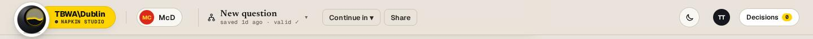
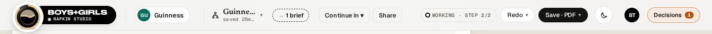
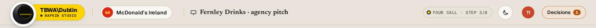
Menus
Every menu is a .p33-pop or .tba-menu: position: fixed, paper, 1px line, radius 10px, padding 6px, shadow 0 18px 40px -14px rgba(20,20,19,.38), min-width 240px (300px for the document menu). Rows are 8–9px × 10px with radius 7px and hover 5–6% ink. A row is a bold title with a 12px muted line under it. Headings are mono 10–10.5px caps. A disabled row is at 50% opacity and not-allowed. Esc closes.
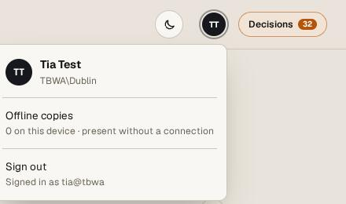
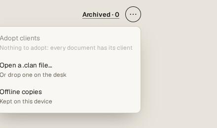
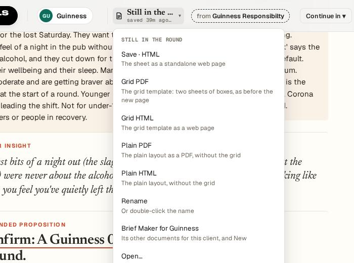
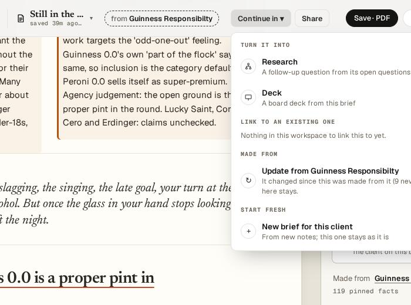
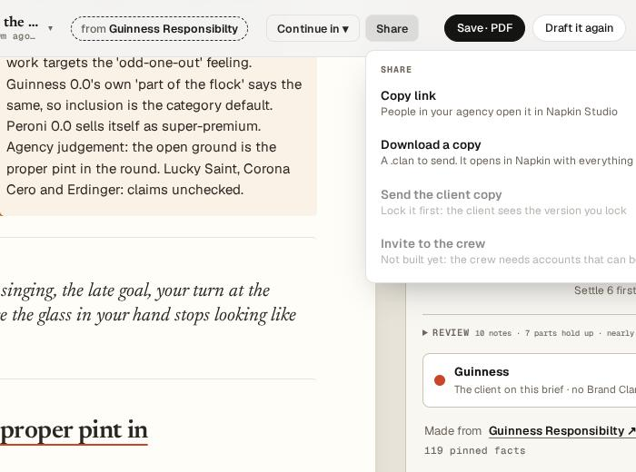
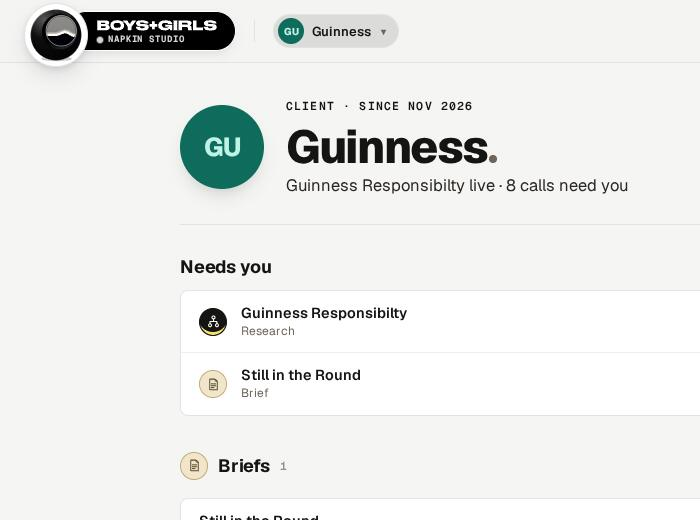
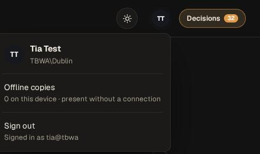
The Decisions drawer
.dtree-drawer slides in from the right: width min(540px, 94vw), paper, with a backdrop of rgba(20,20,19,.28). The head (padding 18px 22px, card ground) has a mono eyebrow "DECISIONS", the title (18px/800) "Client · Document", and Close (outlined 1px in ink). The call card comes first (--warn-soft, a 1px warn line at 38%, radius 8px): "n open calls need your sign-off · NEEDS YOU", each call with Looks right (only for an unchecked finding), Set aside (per person, per browser) and Open, capped at 3 with "Show all n". Then the primary "Approve all and lock …", then four tabs in a .seg-row.
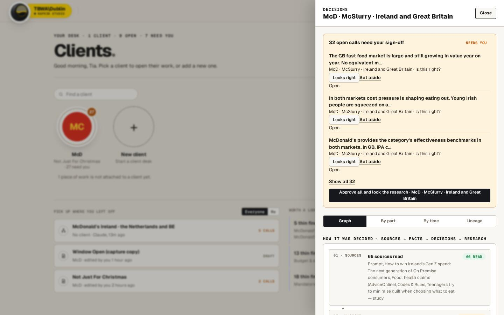
123- 1Head: eyebrow, title, Close
- 2Call card: the one home for open calls
- 3Graph · By part · By time · Lineage
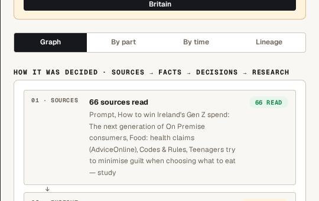
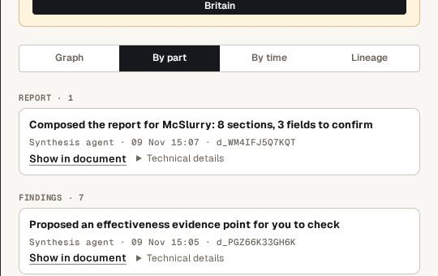
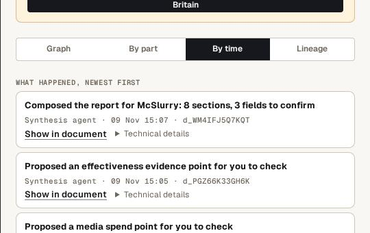
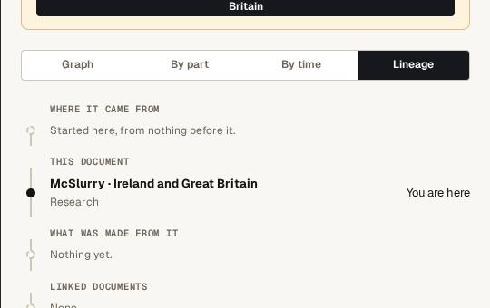
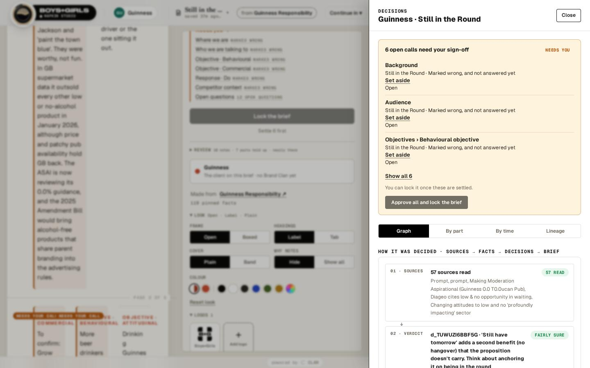
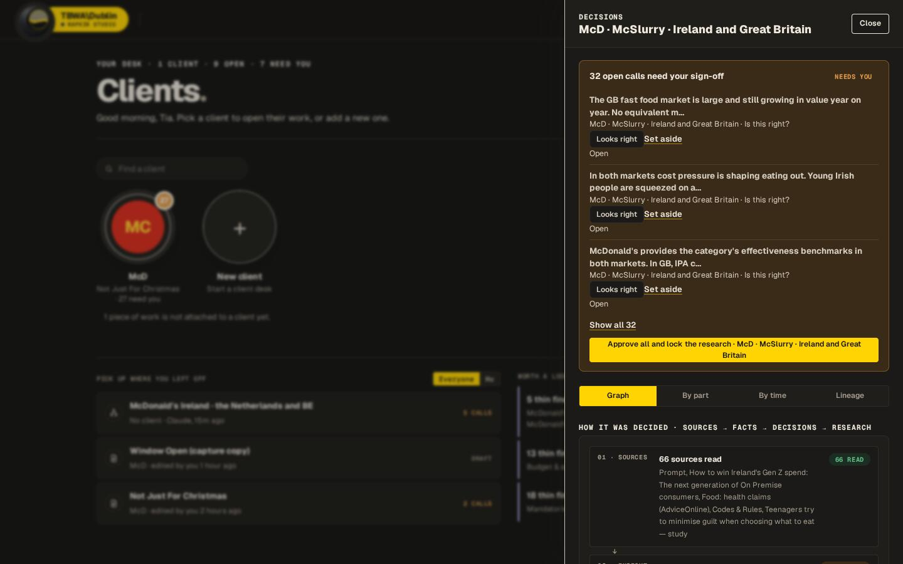
The desk
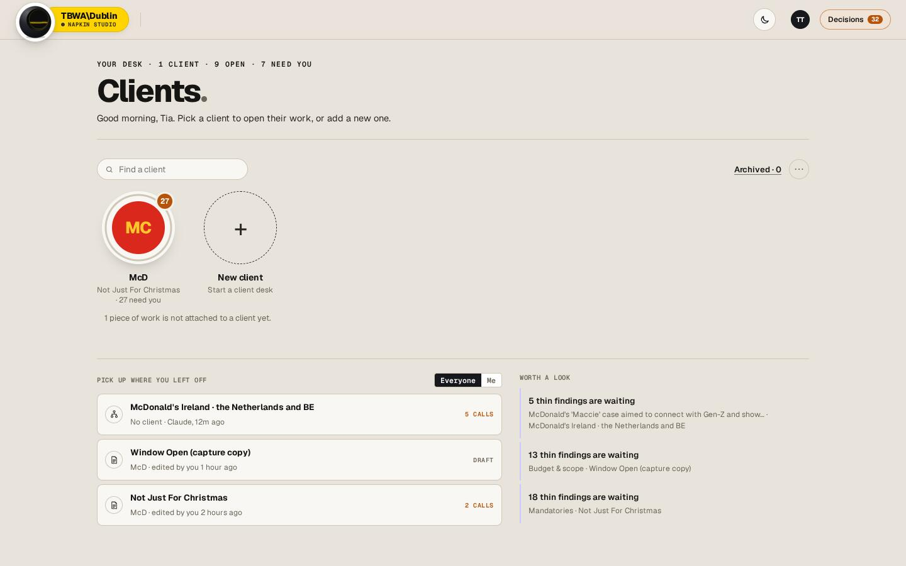
123456789- 1Eyebrow: "YOUR DESK · n CLIENTS · n OPEN · n NEED YOU"
- 2"Clients." 50px/800, the period a muted dot
- 3Find a client: 240px pill
- 4Client circle: 132px button, 116px disc, 84px initials in the client colour, 3px progress track
- 5Needs badge: 24px, amber, mono 12px, 3px desk ring
- 6New client: dashed 1.5px --line-strong disc
- 7Everyone / Me
- 8Pick up where you left off: rows with tool icon, title, client · who · when, state in mono caps (amber "n CALLS")
- 9Worth a look: a 2px accent rule and short notices
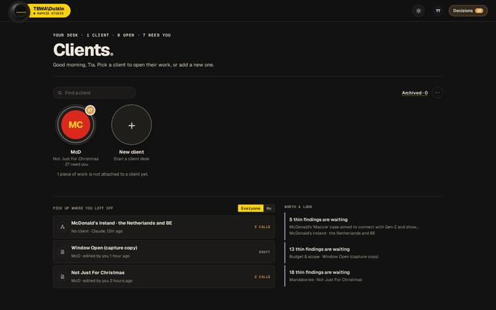
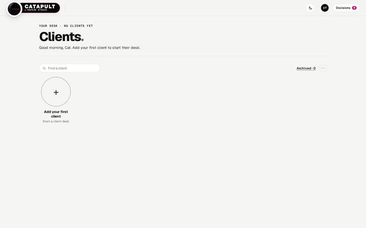
The dial
Clicking a client circle opens the dial over the desk: .dial 360px square with drop-shadow(0 18px 30px rgba(20,20,19,.12)). Four quadrants (.dz, paper fill #FFFDF8, stroke #DDD5C5 2px) are Brief, Research, Deck and Production. Each has a name (26px/700), a sub line (15px/500 muted), and a "YOUR CALL" tag (mono 16px/700 on ink) when it needs you. The hub is 28.75% of the dial, in the client's colours, ringed 0 0 0 4px paper, 0 0 0 6px --ag-act. Clicking the hub opens the client page, and clicking a quadrant opens that tool for the client.
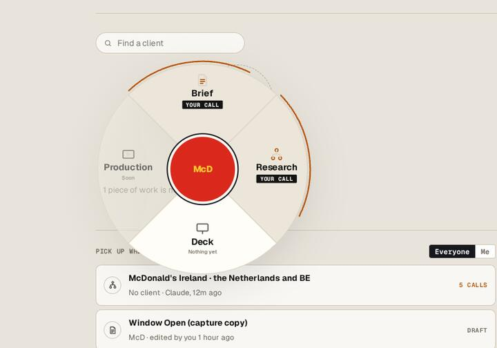
12- 1Hub: client page
- 2Quadrant: tool, state, YOUR CALL tag
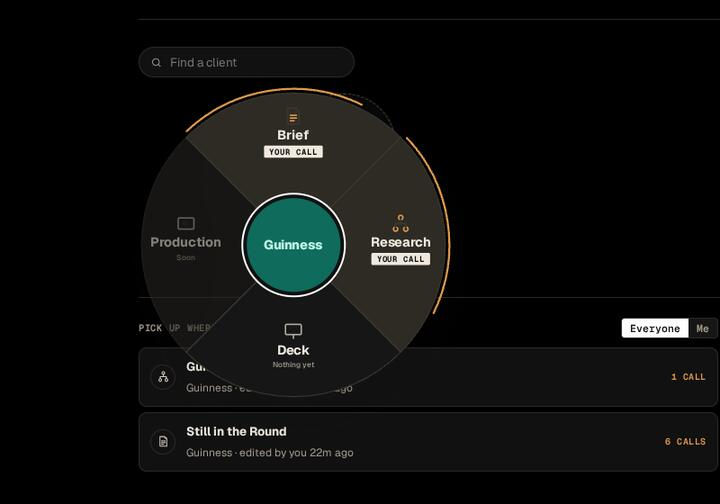
The client page
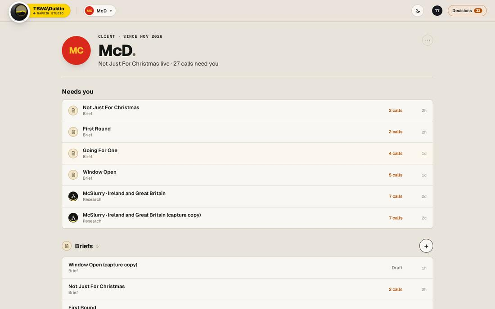
1234567- 184px client disc
- 2Client name 46px/800 with eyebrow and sub line
- 3⋯
- 4Needs you: first section, the work that waits on you
- 5Tool group heading: the tool's door, with a count
- 6+ New, 40px circle
- 7Row: title, kind, state (amber when calls are open), age in mono
- 8Brand Clan card: Open kit
- 9"n decisions on the record · n documents"
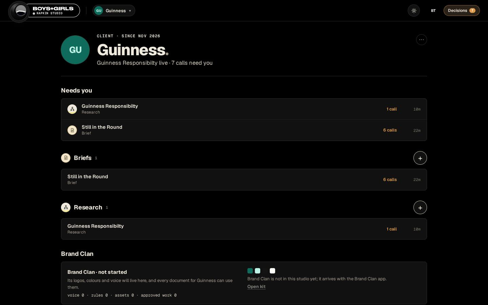